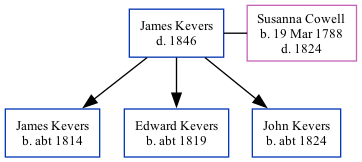

James Kevers - 1846
[ Home ] | [ Calendar ] | [ Surnames Index ] | [ Family History ]James Kevers, the husband of Susanna Cowell (the four times great-aunt of Nigel Horne), and married Susanna (with whom he had 3 children: James, Edward and John) in Margate, Kent, England on Oct 13, 18083.
He died in 1846 in Thanet, Kent1,2 and was buried at St John the Baptist Church in Margate on Sep 26, 18464,5.
Children
- James was born c. 1814
- Edward was born c. 1819
- John was born c. 1824
Citations
- England & Wales, FreeBMD Death Index: 1837-1915 Online publication - Provo, UT, USA: The Generations Network, Inc., 2006.Original data - General Register Office. England and Wales Civil Registration Indexes. London, England: General Register Office. © Crown copyright. Published by permission of the Cont
- England, Select Deaths and Burials, 1538-1991 Ancestry.com Operations, Inc.
- England Marriages 1538-1973 - Findmypast
- Kent, Canterbury Archdeaconry burials 1538-1988 - Findmypast
- Kent, Canterbury Archdeaconry burials 1538-1988 - Findmypast
Media
England & Wales deaths 1837-2007 - BMD/D/1846/3/AZ/000432/090
Kent, Canterbury Archdeaconry burials 1538-1988 - GBPRS/CANT/D/95199158
England Deaths & Burials 1538-1991 - R_276592361
Family Tree
Generated by Ged2Site. Last updated on Jul 20, 2025